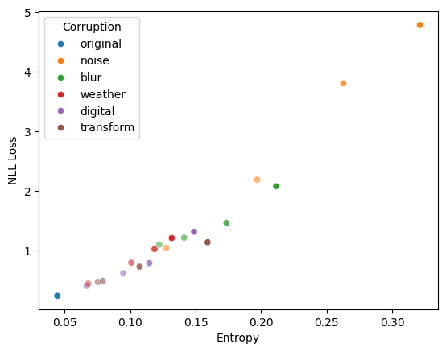
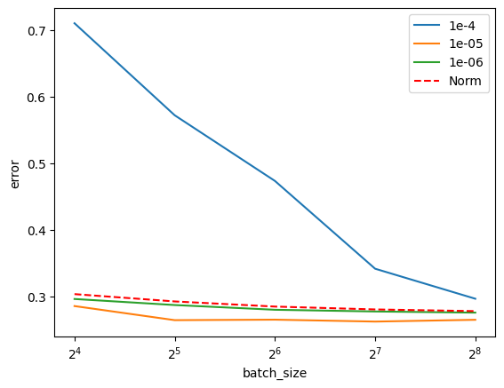
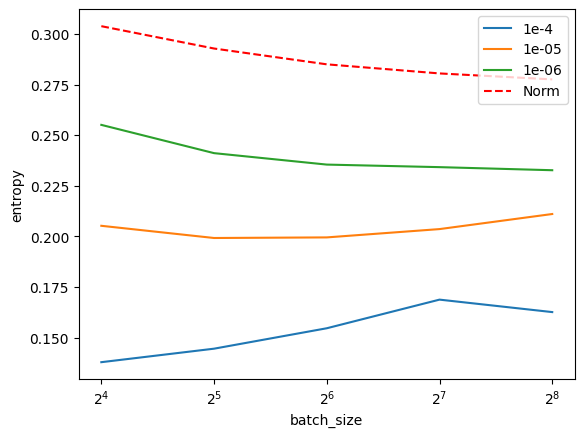

TENT: Fully Test-Time Adaptation By Entropy Minimization
An attempted (partial) paper reproduction
deep learning
paper
Published
December 29, 2024
Once a model is deployed the feature (covariate) data distribution might shift from that seen during training. These shifts make models go out-of-distribution and worsen their predictions. This paper proposes a simple method to help models adapt to these shifts: minimize the entropy of your predictions.
That is, before making test-time predictions for a batch, you nudge (SGD) the model to predict peakier (less entropic) class distributions.
Why minimize entropy?
Firstly, because it is convenient. In contrast to other methods, you don’t need to modify the training procedure nor require test-time labels. Because labels are rarely available at test time, this makes TENT “fully test-time”.
Second, the authors argue that entropy is related to both error and shifts:
“Entropy is related to error, as more confident predictions are all-in-all more correct (Figure 1). Entropy is related to shifts due to corruption, as more corruption results in more entropy, with a strong rank correlation to the loss for image classification as the level of corruption increases (Figure 2).”
To reproduce Figures 1 & 2 we train a ResNet-26 on CIFAR-10 and evaluate its predictions on corrupted versions of the test set to simulate test-time shifts.
(Note: while the authors also show results for CIFAR-100 and ImageNet, we’ll only deal with this small dataset and model for convenience.)
Figure 1: Preds with less entropy have lower error rates.

Figure 2: More corruption (shown as alpha) leads to higher loss and entropy.
The intuition here as far as I can tell is that entropy encodes the model’s confidence. If the model’s prediction is confident it is all-in-all more probable to be correct (it might have seen similar examples during training, the example might be “easy”, etc). Corruptions take the model OOD and decrease its confidence. Since cross-entropy is lowest when all probability mass is assigned to the correct label, increasing entropy (all-in-all) dilutes that mass and increases loss.
Two important notes on how entropy is minimized:
First, the authors note that once we switch the model to entropy minimization we run the risk of causing it to deviate from its training. While you could choose a sufficiently small learning rate or add KL regularization to alleviate this, the authors opt for freezing most of the model and only updating the learnable parameters in the batch norm layers.
Second, we must use batches. If we minimize single examples we’ll just assign all of the mass to the most likely class.
TENT example
# Only update BN layersdef prepare_for_test_time(module, reset_stats =True):ifisinstance(module, nn.BatchNorm2d):if reset_stats: module.reset_running_stats() module.requires_grad =Trueelse: module.requires_grad =Falsefor m in module.children(): prepare_for_test_time(m, reset_stats)# Init the model & optimizermodel = get_cifar10_model(); model.to(device)corr_test_set = get_test_set(corr_type ='gaussian_noise', severity =5)model.apply(functools.partial(prepare_for_test_time, reset_stats =False))optimizer = optim.AdamW(model.parameters(), lr =0.00001)# Get a batch of corrupted imagesimages, labels =next(iter(DataLoader(corr_test_set, batch_size =128)))images, labels = images.to(device), labels.to(device)# Minimize entropymodel.train()optimizer.zero_grad()preds = model(images)entropy =-(preds.softmax(dim =1) * preds.log_softmax(dim =1)).sum(dim =1)loss = entropy.mean()loss.backward()optimizer.step()new_preds = model(images)# Plotf, axs = plt.subplots(1, 3, figsize = (8, 3))ix =89axs[0].imshow(test_set[ix][0].permute(1, 2, 0).cpu().numpy())axs[0].set_title(test_set.classes[test_set[ix][1]])axs[0].set_xticks([]); axs[0].set_yticks([])axs[1].imshow(images[ix].permute(1, 2, 0).cpu().numpy())axs[1].set_title('corrupted')axs[1].set_xticks([]); axs[1].set_yticks([])order = torch.argsort(preds.softmax(dim =1)[ix]).detach().cpu().numpy()[::-1]rows = [{'class': i, 'prob':p, 'type': 'unadapted'} for i, p inenumerate(preds.softmax(dim =1)[ix].detach().cpu().numpy()[order])]rows.extend([{'class': i, 'prob':p, 'type': 'TENT'} for i, p inenumerate(new_preds.softmax(dim =1)[ix].detach().cpu().numpy()[order])])sns.barplot(x ='class', y ='prob', hue ='type', data = pd.DataFrame(rows), ax = axs[2])axs[2].set_title('class distribution')axs[2].legend()axs[2].set_xticks([]); axs[2].set_yticks([])f.tight_layout()
Figure 3: TENT produces class distributions with less entropy, concentrating mass in fewer classes.
Now for evaluation. While the authors consider other baselines, for simplicity, we only compare TENT against the unadapted source model and a test-time normalization method which just updates the BN statistics during testing.
The paper shows TENT having more of a lead on this dataset, but this is the best I could do.
How sensitive is it to hyperparameters? TENT has two: the test-time learning rate and batch size. We vary these and show results for the gaussian_noise corruption.

Figure 5: TENT consistently outperforms other methods across corruption types.

Figure 6: Mean entropy over test set
TENT seems quite sensitive to hyperparameters, a common challenge to all Test-Time Adaptation methods.
Wrapping up, TENT is a compelling TTA method. You can use a pre-trained model and don’t require test-time labels. Some challenges are that it is limited to classification, is not well-suited for calibrated (makes models overconfident) or online learning (we need batches), and is sensitive to hyperparameters.
All-in-all it was an interesting paper and introduced me to the test-time adaptation literature.